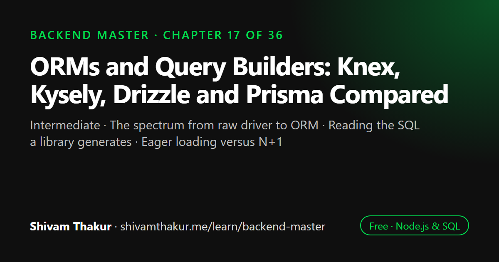

Chapter 17 of 36 · Intermediate
ORMs and Query Builders: Knex, Kysely, Drizzle and Prisma Compared
ORMs and Query Builders — Raw SQL, Builders, and ORMs (and How to Choose)

ORMs and query builders trade control for convenience but never remove the need to understand SQL. This chapter runs the same feature through Knex, Kysely, Drizzle and Prisma, prints the SQL each generates, compares eager loading, transactions and type handling, and gives a decision checklist.
In this chapter you will learn
- The spectrum from raw driver to ORM
- Reading the SQL a library generates
- Eager loading versus N+1
- Transactions and raw escape hatches
- Choosing a tool and keeping it behind repositories
17.0 Why This Chapter Matters
You can now write correct, fast, concurrent SQL by hand. So why would anyone use an ORM or a query builder?
Because in a real codebase with 200 queries, hand-written SQL strings have costs: typos that only fail at runtime, repeated boilerplate for mapping rows to objects, hard-to-compose dynamic filters, and no help when a column is renamed. Libraries promise to fix that. They also carry real dangers: hidden N+1 queries, inefficient generated SQL, leaky abstractions, and the temptation to stop knowing SQL.
There is no universal winner. This chapter gives you the facts to choose, built on one rule:
Whatever tool you use, you must be able to see and judge the SQL it sends.
We run the same ShopLine feature (order history, nested items, dynamic filters, a transaction) through four real libraries (Knex, Kysely, Drizzle ORM and Prisma 7) against PostgreSQL 17, print the SQL each one generates, and compare.
By the end you'll be able to:
- Explain the spectrum: raw driver → query builder → ORM, and what each trades.
- Understand the Active Record vs Data Mapper patterns and the object-relational impedance mismatch.
- Read the SQL a library generates and spot N+1, over-fetching and bad joins.
- Use eager loading, raw escape hatches and transactions correctly in each tool.
- Choose between Knex, Kysely, Drizzle, Prisma (and know where TypeORM/Sequelize/MikroORM fit).
- Keep your schema and migrations (Ch 14) in sync with the code.
17.1 The Spectrum
more control, more code more convenience, more magic
────────────────────────────────────────────────────────────────────────────────────────────►
raw driver (pg) → SQL-first helpers → query builder → schema-first ORM → full ORM
(tagged templates) (Knex, Kysely) (Drizzle, Prisma) (TypeORM, MikroORM, Sequelize)| Layer | What you write | What it gives you | What it costs |
|---|---|---|---|
Raw driver (pg) |
SQL strings | Full SQL power, zero surprises | Strings are unchecked; manual mapping; manual composition |
| Query builder (Knex, Kysely) | Chained JS that mirrors SQL | Composable queries, safe parameters, (Kysely) full type-safety | You still think in SQL (a feature) |
| ORM (Drizzle, Prisma, TypeORM…) | Models/schema + high-level queries | Typed results, relations, nested loading, migrations tooling | Generated SQL you must inspect; abstraction limits |
Two ORM patterns you should be able to name
- Active Record (Rails, Sequelize models, TypeORM
BaseEntity): each object is a row and saves itself (user.save()). Simple, but domain logic and persistence are glued together. - Data Mapper (Prisma, MikroORM, TypeORM repositories, Drizzle): plain data/objects, plus a separate component that maps them to rows. Fits the repository pattern from Chapter 11 better.
What an ORM can never hide
- Round trips (N+1): the ORM can't know you're in a loop.
- Transactions and isolation: Chapter 16's rules apply unchanged.
- Indexes and query plans: Chapter 15 applies unchanged.
- The database's data types (
bigint,numeric,timestamptz): you'll see them leak through (§17.6).
17.2 The Same Feature Four Ways
All four libraries run against the live ShopLine tables. Setup and complete scripts are in resources/ch17/.
The feature:
- A. The three newest orders of user 1 with their totals (join + group + sort).
- B. Each order with its items and product names (nested data, the N+1 danger zone).
- C. Product listing with optional filters (dynamic composition).
- D. A stock decrement + order insert in a transaction that we deliberately roll back.
17.2.1 Knex (query builder, the veteran)
import knexLib from 'knex';
const knex = knexLib({ client: 'pg', connection: conn, pool: { min: 0, max: 5 } });
knex.on('query', (q) => log.push(q.sql, q.bindings)); // ← ALWAYS wire up SQL logging
// A. join + aggregate
const A = await knex('orders as o').join('order_items as oi', 'oi.order_id', 'o.id')
.where('o.user_id', 1).groupBy('o.id').select('o.id', 'o.status')
.sum({ total: knex.raw('oi.quantity * oi.unit_price_minor') }).orderBy('o.id', 'desc').limit(3);Generated SQL (exactly as captured):
select "o"."id", "o"."status", sum(oi.quantity * oi.unit_price_minor) as "total"
from "orders" as "o" inner join "order_items" as "oi" on "oi"."order_id" = "o"."id"
where "o"."user_id" = $1 group by "o"."id" order by "o"."id" desc limit $2 -- [1,3]Result: [ { id: '9', status: 'delivered', total: '91400' }, … ]. Note id and total are strings: that's the raw pg driver's bigint/numeric behaviour from Chapter 13, passing straight through the builder.
Dynamic filters are Knex's strong suit:
const rows = await knex('products')
.modify((q) => { if (f.category) q.where('category_id', f.category);
if (f.maxPrice != null) q.where('price_minor', '<=', f.maxPrice); })
.orderBy(f.sort, f.dir).select('id', 'name', 'price_minor');
// → select "id","name","price_minor" from "products" where "category_id" = $1 and "price_minor" <= $2 order by "price_minor" desc(Careful: orderBy(f.sort, …) with an unchecked f.sort from a request is the identifier-injection hole from Ch 13. Whitelist it.)
Transaction (the callback form commits on success, rolls back on a throw):
await knex.transaction(async (trx) => {
await trx('products').where('id', 1).andWhere('stock', '>=', 2).decrement('stock', 2);
const [o] = await trx('orders').insert({ user_id: 1, status: 'paid', created_at: new Date() }).returning('id');
await trx('order_items').insert({ order_id: o.id, product_id: 1, quantity: 2, unit_price_minor: 100 });
throw new Error('demo: force rollback');
});[1] BEGIN;
[2] update "products" set "stock" = "stock" - $1 where "id" = $2 and "stock" >= $3 -- [2,1,2]
[3] insert into "orders" ("created_at","status","user_id") values ($1,$2,$3) returning "id"
[4] insert into "order_items" (...) values ($1,$2,$3,$4) -- ["10",1,2,100]
[5] ROLLBACK
orders after rollback: { n: '9' } ← same 9 orders as before: nothing leakedYou can see Chapter 16's lesson implemented for you: one connection (trx) for the whole block. The classic bug in Knex is using knex(...) instead of trx(...) inside the callback, which runs outside the transaction.
17.2.2 Kysely (type-safe query builder)
Kysely is "Knex for TypeScript people": every column name, table name and result type is checked at compile time from a Database interface you provide (hand-written or generated by kysely-codegen). Here we run it as plain JS, which works identically at runtime.
const db = new Kysely({ dialect: new PostgresDialect({ pool: new pg.Pool({ ...conn, max: 5 }) }),
log: (e) => e.level === 'query' && log.push(e.query.sql, e.query.parameters) });
const A = await db.selectFrom('orders as o').innerJoin('order_items as oi', 'oi.order_id', 'o.id')
.where('o.user_id', '=', 1).groupBy('o.id')
.select(['o.id', 'o.status', sql`sum(oi.quantity * oi.unit_price_minor)`.as('total')])
.orderBy('o.id', 'desc').limit(3).execute();The SQL is identical to Knex's (that's the point of a builder: what you write is what you get).
Nested data in ONE query: Kysely's PostgreSQL helpers build JSON subqueries:
import { jsonArrayFrom } from 'kysely/helpers/postgres';
const nested = await db.selectFrom('orders as o').where('o.user_id', '=', 1).select(['o.id', 'o.status'])
.select((eb) => jsonArrayFrom(
eb.selectFrom('order_items as oi').innerJoin('products as p', 'p.id', 'oi.product_id')
.select(['p.name', 'oi.quantity']).whereRef('oi.order_id', '=', 'o.id')).as('items'))
.orderBy('o.id').execute();select "o"."id", "o"."status",
(select coalesce(json_agg(agg), '[]') from (select "p"."name", "oi"."quantity" from "order_items" as "oi"
inner join "products" as "p" on "p"."id" = "oi"."product_id" where "oi"."order_id" = "o"."id") as agg) as "items"
from "orders" as "o" where "o"."user_id" = $1 order by "o"."id"Result (one row of the output): {"id":"1","status":"delivered","items":[{"name":"Notebook A5","quantity":2},{"name":"Gel Pen","quantity":5}]}
One round trip for orders and their items, with no row multiplication (a plain join would repeat the order columns for each item). This is the best answer to the N+1 problem in the book so far, and you can read exactly what it does.
An upsert, typed, and run inside a transaction that we rolled back (the review kept its original rating 5 afterwards):
insert into "reviews" (...) values ($1,$2,$3,$4)
on conflict ("product_id","user_id") do update set "rating" = $5, "body" = $6 returning *(My demo issued a manual ROLLBACK inside Kysely's own transaction wrapper, which then issued a harmless commit. In real code, throw an error and let the library roll back.)
17.2.3 Drizzle ORM (schema-in-code, SQL-like)
Drizzle defines tables in TypeScript/JS and gives you both an SQL-like builder and a relational query API:
const orders = pgTable('orders', {
id: bigint({ mode: 'number' }).primaryKey().generatedAlwaysAsIdentity(),
userId: bigint('user_id', { mode: 'number' }).notNull(),
status: text().notNull(),
createdAt: timestamp('created_at', { withTimezone: true }).notNull(),
});Note bigint({ mode: 'number' }): Drizzle lets you choose how bigints arrive. Our results came back as real numbers (id: 9), not strings. That's convenient, but it's a precision trap above 2⁵³ (Ch 13); use mode: 'bigint' or keep strings for ids that may exceed it.
const A = await db.select({ id: orders.id, status: orders.status,
total: sql`sum(${orderItems.quantity} * ${orderItems.unitPriceMinor})`.mapWith(Number) })
.from(orders).innerJoin(orderItems, eq(orderItems.orderId, orders.id))
.where(eq(orders.userId, 1)).groupBy(orders.id).orderBy(desc(orders.id)).limit(3);
// [ { id: 9, status: 'delivered', total: 91400 }, ... ] ← numbers, thanks to the schema and mapWithThe relational query API (eager loading):
const rel = await db.query.orders.findMany({
where: eq(orders.userId, 1), with: { items: { columns: { quantity: true } } }, orderBy: orders.id, limit: 2 });select "orders"."id", "orders"."user_id", "orders"."status", "orders"."created_at", "orders_items"."data" as "items"
from "orders" "orders"
left join lateral (select coalesce(json_agg(json_build_array("orders_items"."quantity")), '[]'::json) as "data"
from "order_items" "orders_items" where "orders_items"."order_id" = "orders"."id") "orders_items" on true
where "orders"."user_id" = $1 order by "orders"."id" limit $2Again one query: a LEFT JOIN LATERAL with json_agg: the exact technique from Chapter 13 (§ lateral joins). The ORM generated the very SQL an expert would write.
Transaction + rollback:
[1] begin
[2] update "products" set "stock" = "products"."stock" - 2 where ("products"."id" = $1 and "products"."stock" >= 2) returning "id","stock"
[3] rollback
after decrement (inside tx): [ { id: 1, stock: 48 } ]
stock of product 1 now: { stock: 50 }17.2.4 Prisma 7 (schema-first, generated client)
Prisma uses its own schema language (schema.prisma) as the single source of truth, then generates a typed client.
Introspection: with an existing database you start from npx prisma db pull. It read all ShopLine tables and produced (excerpt):
model orders {
id BigInt @id @default(autoincrement())
user_id BigInt
status String
created_at DateTime @db.Timestamptz(6)
order_items order_items[]
users users @relation(fields: [user_id], references: [id], onDelete: NoAction, onUpdate: NoAction)
}It also honestly told us what it could not represent:
These constraints are not supported by Prisma Client, because Prisma currently does not fully support check constraints:
- Model: "orders", constraint: "orders_status_check" ... "products_stock_check" ... (8 in total)
The following models were ignored as they do not have a valid unique identifier: "pages_demo"That's the schema-first trade-off in one screen: the ORM's model of your database is smaller than the database. CHECK constraints (Chapter 14) still protect your data, but Prisma doesn't know them, and a table without a primary key is invisible. (In Prisma 7 you also configure the connection in prisma.config.ts and pass a driver adapter such as @prisma/adapter-pg; our files are in resources/ch17/.)
Queries and the SQL they produced:
const nested = await prisma.orders.findMany({ where: { user_id: 1n },
include: { order_items: { include: { products: { select: { name: true } } } } }, orderBy: { id: 'asc' }, take: 2 });[1] SELECT "id","user_id","status","created_at" FROM "orders" WHERE "user_id" = $1 ORDER BY "id" ASC LIMIT $2 OFFSET $3
[2] SELECT … FROM "order_items" WHERE "order_id" IN ($1,$2) OFFSET $3
[3] SELECT "id","name" FROM "products" WHERE "id" IN ($1,$2,$3) OFFSET $4Three queries, not one: Prisma's include loads each relation level with a batched IN (…) query and stitches the results together in memory. That avoids N+1 (it's 3 queries for any number of orders), but it is not a join. Fine for most cases; for very large IN lists or when you want one round trip, you'd choose differently. (Newer Prisma versions have a relationLoadStrategy: "join" option for PostgreSQL; I did not test it.)
Where Prisma's query API runs out, you drop to raw SQL, as a tagged template that is parameterized:
const total = await prisma.$queryRaw`SELECT o.id, sum(oi.quantity * oi.unit_price_minor)::int AS total
FROM orders o JOIN order_items oi ON oi.order_id = o.id WHERE o.user_id = ${1} GROUP BY o.id ORDER BY o.id DESC LIMIT 3`;
// SQL sent: ... WHERE o.user_id = $1 ... -- [1] ← ${1} became a parameter, not string concatenationgroupBy can sum a single column (_sum: { quantity: 7 }), but not quantity * unit_price_minor; the "revenue" query needs raw SQL. Expect this regularly: the ORM covers CRUD and relations; analytics-style queries are usually raw.
Transaction:
await prisma.$transaction(async (tx) => {
await tx.products.updateMany({ where: { id: 1n, stock: { gte: 2 } }, data: { stock: { decrement: 2 } } });
throw new Error('demo rollback');
});
// UPDATE "products" SET "stock" = ("stock" - $1) WHERE ("id" = $2 AND "stock" >= $3) -- [2,"1",2]
// ROLLBACK stock now: { stock: 50 }Note updateMany({ where: { stock: { gte: 2 } }, data: { stock: { decrement: 2 } } }): the same atomic conditional update pattern from Chapter 16 (strategy 2), expressed through the ORM. { decrement: 2 } becomes stock - $1 in SQL, not "read, subtract in JS, write". Know which of your ORM's operations are atomic in SQL and which are read-modify-write.
Also note Prisma returns BigInt values (1n, order_id: 1n), a third behaviour for 64-bit ids (the driver gave strings, Drizzle gave numbers). JSON serialization of a BigInt throws, so you must convert it (we used a replacer when printing).
17.3 The Comparison Table (Measured and Observed)
| Knex | Kysely | Drizzle | Prisma 7 | |
|---|---|---|---|---|
| Style | Query builder | Typed query builder | SQL-like ORM + relational API | Schema-first ORM, generated client |
| You write | JS chains | TS chains | TS schema + chains | schema.prisma + client API |
| Type safety | Weak (manual) | Strong, compile-time | Strong (from schema) | Strong (generated) |
| Source of truth | Your DB | Your DB (+ types) | Code schema | schema.prisma |
| Nested loading | Manual (batch/join) | JSON subqueries: 1 query | Lateral JSON: 1 query | include: 3 queries (batched IN) |
| Raw SQL escape | knex.raw |
sql`…` |
sql`…` |
$queryRaw`…` |
bigint arrives as |
string | string | number (configurable) | BigInt |
| Own migrations | Yes (knex migrate) | Basic | drizzle-kit |
prisma migrate |
| Unsupported DB features | Few | Few | Few | CHECK constraints not modelled; tables without PK ignored |
| Generated code step | No | Optional codegen | No | Yes (prisma generate) |
| Best at | Flexible SQL composition | Type-safe SQL | Type-safe + relations in code | Developer experience, fast CRUD |
Performance: it's the round trip, not the library
I timed 3,000 sequential primary-key lookups on one connection per library (after warm-up), repeating the run three times:
raw pg 2431 µs 3364 µs 3590 µs
knex 2314 µs 4224 µs 2273 µs
kysely 2549 µs 2722 µs 3762 µs
drizzle 6203 µs 2822 µs 3918 µs
prisma 3302 µs (one run)The honest reading: the numbers are dominated by network round trip and noise (≈2–4 ms per query through Docker on Windows; run-to-run swings of 2× are larger than any difference between libraries). The builders add microseconds of CPU, which vanish next to one round trip. Don't choose a library on micro-benchmarks of simple queries; choose on the SQL it generates and the number of round trips it makes. (A real benchmark would use many runs and a quiet machine, which I did not have.)
17.4 The Dangers (All Tools)
17.4.1 N+1, again, disguised as innocent code
Any tool with lazy relation access (TypeORM/Sequelize lazy relations, an accidental loop around findUnique) can recreate Chapter 15's N+1 invisibly. Our Knex demo made the problem explicit:
## Knex B1: N+1 loop (4 orders)
[1] select "id" from "orders" where "user_id" = $1 -- [1]
[2] select * from "order_items" where "order_id" = $1 -- ["1"]
[3] select * from "order_items" where "order_id" = $1 -- ["2"]
[4] select * from "order_items" where "order_id" = $1 -- ["5"]
[5] select * from "order_items" where "order_id" = $1 -- ["9"]
## Knex B2: one batched query
[1] select "oi"."order_id","p"."name","oi"."quantity" from "order_items" as "oi" inner join "products" as "p" ... where "oi"."order_id" in ($1,$2,$3,$4)5 queries vs 1. At 500 orders the difference was 1.9 s vs 25 ms (Ch 15). Use eager loading (include, with, JSON subqueries) or batch by hand; log queries in development and count them per request.
17.4.2 Raw escape hatches reintroduce injection
Every tool lets you run raw SQL. Parameterized forms are safe; string-built forms are not. Proven with Knex:
const evil = "1 OR 1=1";
knex.raw('select count(*)::int n from users where id = ?', [evil]);
// → error: invalid input syntax for type bigint: "1 OR 1=1" (treated as a VALUE, rejected safely)
knex.raw(`select count(*)::int n from users where id = ${evil}`);
// → [ { n: 5 } ] ← every row matched: INJECTIONThe equivalents to be suspicious of: knex.raw / whereRaw with interpolation, Prisma $queryRawUnsafe / $executeRawUnsafe, Drizzle sql.raw(), Kysely sql.raw(). (I executed only the Knex one; the others are from documentation.) Tagged templates (sql`…${x}`, $queryRaw`…${x}`) parameterize interpolations automatically. Never pass user input to an "unsafe/raw" function, and whitelist identifiers (sort columns, table names).
17.4.3 Over-fetching and SELECT *
knex('order_items').where(...) generated select * from "order_items". ORMs often fetch every column by default; on wide tables or jsonb columns that wastes bandwidth and blocks index-only scans (Ch 15). Select what you need (select/columns/select: {…}).
17.4.4 Types leak: bigint, numeric, dates
We saw three different representations of the same bigint column across libraries. Decide a convention for your whole project (e.g., ids as strings at the API boundary; money as integers) and enforce it in one mapping layer. Never let BigInt or Decimal objects drift into JSON.stringify unconverted.
17.4.5 The model isn't the whole database
Prisma ignored our CHECK constraints and a PK-less table. Other ORMs may mis-model partial indexes, exclusion constraints, generated columns, triggers, or RLS. These still work in the database; the ORM just doesn't know. Treat the ORM schema as a view of the database, and keep constraints/indexes in your migrations (Ch 14), not only in the ORM model.
17.4.6 "ORM migrations" can generate dangerous SQL
Auto-generated migrations diff your model against the DB and will happily emit ALTER COLUMN … TYPE (table rewrite), CREATE INDEX without CONCURRENTLY, or a drop + add for a rename (data loss!). Always read generated migration SQL before applying it, using Chapter 14's checklist. (I did not run prisma migrate or drizzle-kit here.)
17.4.7 Transactions: use the handle you're given
Inside knex.transaction((trx) => …), prisma.$transaction((tx) => …), db.transaction((tx) => …): use trx/tx for every query. Calling the outer knex/prisma/db runs on another connection, outside the transaction: the exact pool.query('BEGIN') bug of Chapter 16. And remember 40001/40P01 retry logic still applies at higher isolation levels.
17.5 The Other ORMs (From Documentation; Not Run Here)
| Tool | Notes |
|---|---|
| TypeORM | Decorator-based entities; supports Active Record and Data Mapper; lazy relations are a classic N+1 source; long-standing maintenance/typing complaints; very common in NestJS tutorials. |
| Sequelize | The oldest Node ORM; Active Record style; typings are weaker; widely deployed in legacy systems. |
| MikroORM | Data Mapper + Unit of Work + identity map (like Hibernate/Doctrine); powerful for rich domain models; steeper learning curve. |
| Objection.js | Models on top of Knex; relation graphs; less active. |
| Slonik / postgres.js / pg-typed / sqlc-style | SQL-first: you write SQL, tooling gives you types. Excellent if your team is SQL-fluent. |
(The notes above are my summary of their documentation and ecosystem reputation; I did not install or test them. Check current maintenance status before adopting any library.)
17.6 How to Choose
| Your situation | Good fit | Why |
|---|---|---|
| Team strong in SQL; complex reporting; want type safety | Kysely (or SQL-first like pg-typed) |
You see/control every query; compile-time safety |
| Want a code-defined schema, relations, and SQL-like control | Drizzle | One-query relational loading; thin layer |
| Product team, many CRUD screens, want best DX and docs | Prisma | Fast to start; great tooling; accept generated-client step and include semantics |
| Legacy JS project with moving parts | Knex | Stable, flexible, no build step |
| Rich domain model with Unit of Work | MikroORM / TypeORM | Object-graph persistence |
| Tiny service, few queries | Raw pg + a small query module |
The best abstraction is sometimes none |
The pragmatic hybrid
Most mature codebases use an ORM/builder for CRUD and raw SQL for hard queries (reports, bulk operations, CTEs, window functions, upserts with special rules), keeping those queries in dedicated, tested repository methods (Chapter 11's repository pattern). That's not a failure; it's the right split.
The decision checklist
- Can I see the SQL (and log it in dev)?
- Can I eager-load without N+1, and verify the query count?
- Does it support my DB features (CHECK, partial indexes, RLS, JSONB operators)? What happens to those in migrations?
- How are transactions exposed (explicit handle, isolation level, retries)?
- How does it map bigint/numeric/timestamptz?
- What's the escape hatch to raw parameterized SQL?
- Is it actively maintained, and can the team debug it at 3 a.m.?
17.7 Putting It in ShopLine's Architecture
Chapter 11 gave ShopLine repositories behind an interface (productRepo.findById, decrementStock), with in-memory and PostgreSQL implementations. Where does a library fit?
modules/orders/
order.service.js ← business rules; knows only the repository interface
order.repo.js ← interface (documented shape)
order.repo.memory.js ← for unit tests
order.repo.pg.js ← THE ONLY FILE that imports knex/kysely/drizzle/prismaThe library never leaks past the *.repo.pg.js file: services receive plain objects ({ id: '9', status: 'paid', totalMinor: 91400 }) with a single, consistent id/money convention. Swapping Knex for Kysely later (or hand-written SQL for one hot query) then touches one file per module, and the service tests (using the in-memory repo) don't change at all. This is the practical payoff of hexagonal design (Ch 11).
A repository method using a transaction handle passed from the service layer (a "unit of work"):
// service
await uow.run(async ({ orders, products }) => { // uow opens ONE transaction/connection
await products.decrementStock(items); // uses the tx handle internally
return orders.create({ userId, items });
});(This sketch shows the design; the tested transaction code is the library-specific snippets above.)
17.8 Edge Cases and Gotchas Checklist
- Never looked at the SQL the library generated.
- N+1 from loops or lazy relations; no per-request query count.
-
$queryRawUnsafe/sql.raw/ string-interpolatedrawwith user input. - Dynamic
orderBy/ table names from user input without a whitelist. -
bigint/numericsurprising types (string vs number vsBigInt);JSON.stringifyonBigInt. - ORM model missing DB-level constraints/indexes; assuming the ORM schema is the schema.
- Blindly applying auto-generated migrations (renames → drop/add).
- Using the outer client inside a transaction callback.
- Read-modify-write in JS where the library offers an atomic SQL operation (
decrement,stock = stock - n). -
SELECT */ loading whole entities when you need two columns. - Very large
IN (…)lists from batched loaders. - No retry on serialization failures/deadlocks (Ch 16).
- Letting ORM entities cross layer boundaries into services/controllers.
- Choosing a library from a micro-benchmark or a blog post instead of its SQL output and maintenance health.
17.9 Chapter Summary
- Spectrum: raw driver → query builder → ORM. You trade control for convenience; you never trade away responsibility for SQL, transactions, indexes or types.
- Patterns: Active Record (row objects that save themselves) vs Data Mapper (separate mapping; fits repositories).
- Same feature, four tools: Knex and Kysely generated identical readable SQL; Kysely and Drizzle loaded nested data in one query (JSON subquery / lateral join); Prisma
includeused three batched queries. - Transactions: always use the provided handle; each library rolled back cleanly (stock stayed 50, order count stayed 9).
- Types leak: the same
bigintcame back as a string (Knex/Kysely/pg), a number (Drizzlemode: 'number') and aBigInt(Prisma). - Prisma introspection ignored 8
CHECKconstraints and a PK-less table: an ORM's model can be smaller than your database. - Raw escapes are the injection risk: proven with Knex (
id = 1 OR 1=1matched all 5 users when interpolated). - Library overhead is negligible next to a round trip in our test (noise exceeded differences).
- Choose by SQL visibility, eager-loading story, DB-feature support, transaction ergonomics, type mapping, escape hatch and maintenance. Use a hybrid: ORM/builder for CRUD, raw SQL for hard queries, all behind repositories.
17.10 Revision Notes
- Always log SQL in dev; count queries per request.
- Eager load: Kysely
jsonArrayFrom, Drizzlewith:, Prismainclude; or batch withIN/ANY. - Use
trx/txinside transaction callbacks; retry40001/40P01. - Atomic ops:
decrement,stock = stock - n WHERE stock >= n. - Raw: tagged templates are safe;
*Unsafe,sql.raw, string-builtraware not. - bigint: string vs number vs BigInt: pick one convention at the repo boundary.
- ORM schema ≠ DB schema; keep constraints and indexes in migrations; read generated migrations.
- Repositories isolate the library to one file per module.
17.11 Mind Map (ASCII)
ORMs & QUERY BUILDERS
│
┌───────────────┬──────────┼────────────┬──────────────────┐
SPECTRUM TOOLS DANGERS CHOOSING ARCHITECTURE
│ │ │ │ │
raw pg Knex N+1 / lazy see the SQL repository pattern
builder Kysely raw injection eager loading lib only in *.repo.pg.js
ORM Drizzle bigint types tx ergonomics unit of work
Active Record Prisma model≠DB DB features hybrid: ORM + raw SQL
Data Mapper (TypeORM…) bad migrations maintenance17.12 Cheat Sheet
// Knex knex('t').where(..).modify(q => …).select(..) knex.transaction(async trx => trx('t')…)
// Kysely db.selectFrom('t').select([..]).where('c','=',v) jsonArrayFrom(sub).as('items') db.transaction().execute(trx => …)
// Drizzle db.select({..}).from(t).where(eq(t.c, v)) db.query.t.findMany({ with: { rel: true } }) db.transaction(tx => …)
// Prisma prisma.t.findMany({ where, include, select }) prisma.$queryRaw`… ${v} …` prisma.$transaction(async tx => …)
// Raw safe tagged template / ? bindings / $1 params NEVER string-concatenate input
// Debug knex.on('query') · Kysely log · Drizzle logger · Prisma log:[{emit:'event',level:'query'}]17.13 Key Takeaways
- Read the SQL. If you can't see it, you can't judge it.
- Eager loading beats loops; count queries per request.
- Raw escape hatches are fine, if parameterized.
- The ORM's schema is a view of your database, not the database.
- Use a hybrid, and keep the library behind repositories.
17.14 20 Multiple Choice Questions
Tap an answer to check it. Your score updates as you go.
Score: 0 / 0 answered (20 questions)
What is the main trade-off of moving from raw SQL toward an ORM?
Active Record means:
Which pairing is Data Mapper-style?
In our test, which library loaded orders with items in ONE query (via JSON/lateral)?
Prisma
includeof orders → items → products produced:Why did Prisma's introspection warn about constraints?
bigintids arrived as strings, numbers andBigIntacross tools. The right response is:In
knex.transaction(async (trx) => …), you should run queries with:Why was
knex.raw(\… id = ${evil}`)` dangerous?Which is a parameterized raw form?
Prisma's
{ stock: { decrement: 2 } }is notable because it:An N+1 in Knex looks like:
Why shouldn't you pick a library from a simple-query micro-benchmark?
Auto-generated ORM migrations can be dangerous because they may:
The best place for ORM/builder imports in a layered ShopLine is:
Which statement about the ORM schema is true?
Kysely's main distinguishing feature is:
Which is NOT a safe way to build dynamic
ORDER BY?A hybrid approach means:
Which question is most important to ask about any ORM?
Show the answer key
1-b, 2-b, 3-b, 4-c, 5-b, 6-b, 7-b, 8-b, 9-b, 10-a, 11-b, 12-b, 13-b, 14-b, 15-c, 16-b, 17-b, 18-b, 19-b, 20-b
17.15 20 Hands-on Exercises
(Use resources/ch17/ and the ShopLine data from Ch 13.)
Easy
- Install Knex; log every generated query; reproduce query A and read the SQL.
- Write the N+1 loop, then replace it with a
whereInbatch; compare query counts. - Add a whitelist for the
sortcolumn in the dynamic product filter. - Show the injection with an interpolated
knex.raw, then fix it with bindings. - Run each tool's transaction demo and verify the rollback by re-querying.
Medium
- Build the "orders with items" query in Kysely using
jsonArrayFrom; explain each SQL clause. - Define the ShopLine tables in Drizzle; use
db.querywithwith:and print the SQL. - Run
prisma db pull; list everything the model omitted vs the real database. - Pass a
bigintid through each tool and write a function normalising it to a string. - Write one revenue-by-month report as raw SQL and as an ORM query; note what's lost in the ORM version.
- Implement an atomic "decrement stock" in each tool and test with 50 concurrent calls (Ch 16 harness).
- Time the three loading strategies (N+1, batched, JSON subquery) for 500 orders.
Hard
- Create
order.repo.pg.jsusing Kysely andorder.repo.memory.js; run the same contract test against both. - Implement a
uow.run()unit-of-work helper that gives repositories a shared transaction handle, with retry on40001. - Try Prisma's
relationLoadStrategy: "join"(if available in your version); compare SQL and timing. - Generate a migration with
drizzle-kitorprisma migratefor a column rename; show what SQL it emits and rewrite it as expand/contract (Ch 14). - Write a query-counter middleware (AsyncLocalStorage) that fails a test when an endpoint exceeds N queries.
- Add
CHECKand a partial unique index in a migration; show your ORM neither models nor breaks them. - Benchmark all libraries properly (≥30 runs, quiet machine, report median and p95) and write up the result.
- Port the same feature to TypeORM or MikroORM and compare the generated SQL and N+1 behaviour with the four tools here.
17.16 5 Interview Questions
1. ORM or raw SQL: which do you choose and why? Model answer: Both, by case. ORM/builder for CRUD, relations and type safety; raw parameterized SQL for reports, bulk operations and anything where I need CTEs, windows or exact plans; all behind repositories so the choice is local. Non-negotiables: log SQL, eager-load to avoid N+1, whitelist identifiers, review generated migrations.
2. What is the N+1 problem and how do ORMs help or hurt?
Model answer: A list query followed by one query per row. ORMs hurt when relations are lazy or when code loops around single lookups; they help with eager loading (include/with/JSON subqueries). Strategies differ: Prisma issued 3 batched IN queries, Kysely/Drizzle one query with JSON aggregation. I verify by counting queries per request.
3. Active Record vs Data Mapper? Model answer: Active Record: an object is a row and saves itself, simple but couples domain and persistence. Data Mapper: plain objects plus a mapper/repository that persists them; better separation, testability and fit with hexagonal architecture.
4. How do transactions work with an ORM and what can go wrong?
Model answer: The library gives a transaction handle bound to one connection; all queries inside must use it. Using the outer client runs queries outside the transaction. Isolation levels, 40001/40P01 retries and short transactions from Ch 16 still apply, and atomic operations (decrement) are preferable to read-modify-write in JS.
5. What are the risks of relying on an ORM's schema and migrations?
Model answer: The ORM model may not represent CHECK constraints, partial indexes, triggers or RLS (Prisma ignored 8 CHECKs in our test); auto-generated migrations can drop/re-add on rename or rewrite big tables without CONCURRENTLY. So treat migrations as reviewed code, keep DB-level rules in SQL migrations, and use expand/contract for risky changes.
17.17 3 Real Projects
Project 1: Same API, Four Data Layers (intermediate, ~10 hours). Implement ShopLine's orders module with a repository interface, then four implementations (Knex, Kysely, Drizzle, Prisma) passing one shared contract test suite. Capture generated SQL per operation, query counts, and a median/p95 benchmark; write a recommendation memo.
Project 2: Query Budget Guard (intermediate, ~6 hours).
A development-time middleware that counts and fingerprints queries per request for any of the libraries, warns on duplicates and SELECT *, and fails CI if a route exceeds its declared "query budget". Include a dashboard of the worst routes.
Project 3: Safe Migration Pipeline (advanced, ~10 hours). A CI step that takes ORM-generated migration SQL, lints it against Chapter 14's dangerous-operation rules (rename as drop/add, type change, non-concurrent index, NOT NULL without default), blocks or annotates PRs, and runs the migration against a production-sized snapshot to measure lock time.
17.18 Further Reading
- Documentation: Knex.js, Kysely (kysely.dev), Drizzle ORM (orm.drizzle.team), Prisma (prisma.io/docs), including each tool's relations/eager loading and raw queries sections.
- Patterns of Enterprise Application Architecture by Martin Fowler: Active Record, Data Mapper, Unit of Work, Repository.
- Ted Neward, "The Vietnam of Computer Science" (2006): the classic critique of ORMs.
- SQL Antipatterns by Bill Karwin: why generated SQL needs reviewing.
kysely-codegen,drizzle-kit,prisma migratedocumentation (generating types and migrations).
Up next → Chapter 18: MongoDB and Document Modeling
PostgreSQL isn't the only answer. Next: when a document database is the right tool, BSON and the MongoDB data model, embedding vs referencing, indexes and the aggregation pipeline, transactions, schema validation, and Mongoose, tested against a real MongoDB 8 container, with an honest comparison to what you just learned in PostgreSQL.
ORMs vs Query Builders: frequently asked questions
Should I use an ORM or raw SQL?
Use both. A builder or ORM suits CRUD and relations, raw parameterised SQL suits reports and performance-critical queries, and both belong behind repository modules so the choice stays local.
Do ORMs prevent N+1 queries?
Only if you use their eager-loading features and check the SQL. Kysely and Drizzle loaded nested data in one query in our test, Prisma used three batched queries, and a manual loop made five.
Why do ids differ between Prisma and Drizzle?
The same bigint column arrived as a string, a JavaScript number or a BigInt depending on the library. Pick one convention and convert at the repository boundary.
Are raw queries in ORMs safe?
Tagged templates and bound parameters are safe; string-built raw queries are injectable. Never pass user input to unsafe or raw functions without parameters.